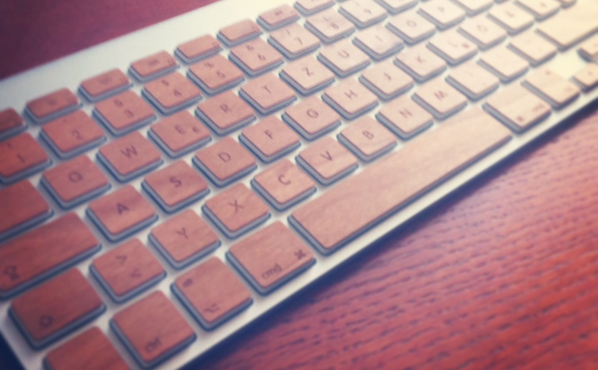
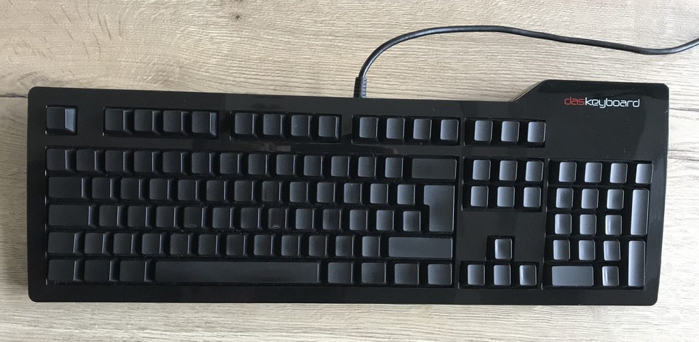
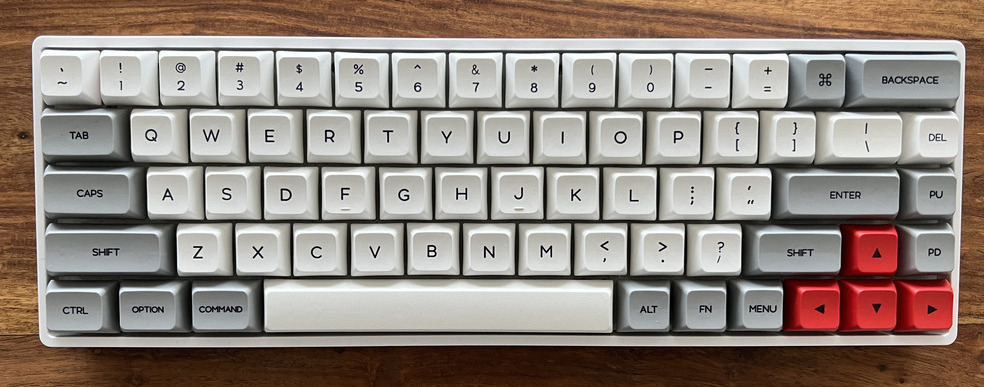

3 minutes
Mechanical Keyboards
When it comes to keyboards I wasn’t really having any real preference. When it started getting interested in computers - mostly for gaming - I used some random full sized membrane keyboard. I used it, because it was around. Not ever was I giving a deeper thought into how I gave inputs into a PC.
Customized apple magic keyboard
After switching away from PC to Apple hardware I mainly stuck with apple keyboards. At the beginning I solely used a standalone MacBook and at some point I got myself an external apple magic keyboard. Apples keyboards are definitely nice to look with it’s eye-pleasing layout. They even have a definitely recognizable tactile feedback, considering the narrow travel distance. That’s about it for me when comparing it to the typing experience on mechanical keyboards. At some point I stumbled upon laser cutted decals out of wood. I put them on and it gave the keyboard some different look. This was probably a one way mod, as removing those decals would have broken the keyboard. I was able to sell it, but back then it looked nice to me. Here is some old photo I was able to dig up.
daskeyboard
My first mechanical keyboard was a “daskeyboard Ultimate”, which I got from a colleague. It’s a full size with - yes - no labels whatsoever.
This wasn’t a real issue for me. But it drove other people nuts when they tried to type on it. The keyboard had cherry brown switches, but at that point I had no real opinion on switches. Only that the cherry blues where to clicky for being used in an office environment.
Code keyboard
The next keyboard I got was the code keyboard, developed by StackOverflow Co-Founder Jeff Atwood. The one I got has the 75% layout with some neat back lighting. Because of the tactical cherry clear switches the typing experience was a lot heavier, meaning it requires a lot more actuation force than what I was used to. The keycaps are made of ABS material, which lead to the typical worn out shininess on the top of the keycaps. Looking back at it, the code keyboard is not a really pleasant one, compared to what is available with way better components for a much lower price.
Epomaker GK68XS
My current is a 65% layout from epomaker. It’s a hot-swappable bluetooth capable keyboard with the option to program it using the GK6+ software. It has some rgb back lightning, which I don’t use at all. I ordered the keyboard with the gateron browns. More to the switches later. All in all I definitely appreciate the compact layout of that keyboard. I don’t miss the F-row at all, as the programming of the keyboard enables me to use the FN modifier key with the digits row as F-keys.
